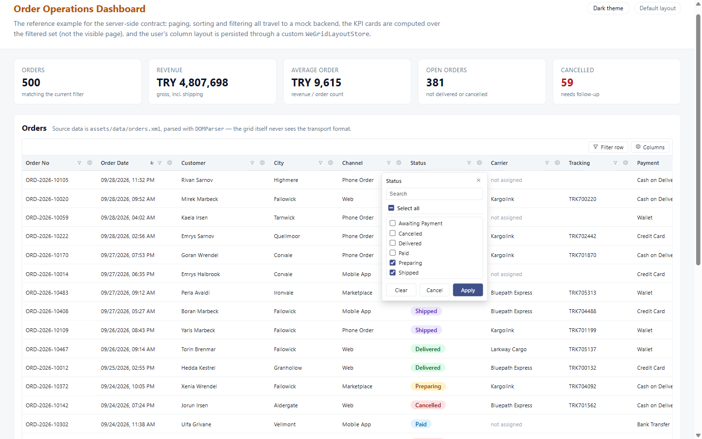

Install
Angular 18.2 through 22 are supported. Peer dependencies are
@angular/core, @angular/common, @angular/forms,
@angular/platform-browser and @angular/cdk — all of which a
normal Angular app already has, except the CDK.
npm install we-grid-angular @angular/cdkAdd the CDK overlay stylesheet (the header and filter menus are rendered through it) and, optionally, the bundled default theme:
// angular.json
"styles": [
"node_modules/@angular/cdk/overlay-prebuilt.css",
"node_modules/we-grid-angular/styles/we-grid-theme.scss",
"src/styles.scss"
]
The theme file is optional: every colour in the grid is a --we-grid-* custom
property with a fallback, so the grid looks finished even if you import nothing.
Quick start
Two required inputs: a gridKey, which is where this grid's per-user layout is
saved, and columns. Everything else is opt-in.
// orders.component.ts
import { Component } from '@angular/core';
import { WeGridColumnDef, WeGridComponent } from 'we-grid-angular';
interface Order {
id: number;
code: string;
customer: string;
total: number;
orderedAt: string;
paid: boolean;
}
@Component({
selector: 'app-orders',
standalone: true,
imports: [WeGridComponent],
templateUrl: './orders.component.html'
})
export class OrdersComponent {
columns: WeGridColumnDef<Order>[] = [
{ field: 'code', header: 'Order no', width: 140, pinned: 'left' },
{ field: 'customer', header: 'Customer', width: 220 },
{ field: 'total', header: 'Total', width: 130, type: 'currency', format: 'EUR', summary: 'sum' },
{ field: 'orderedAt', header: 'Ordered', width: 140, type: 'date' },
{ field: 'paid', header: 'Paid', width: 90, type: 'boolean', align: 'center' }
];
orders: Order[] = [];
}<!-- orders.component.html -->
<we-grid
gridKey="orders"
[columns]="columns"
[data]="orders"
trackByField="id"
[filterRow]="true"
[grouping]="true"
selectable="multi"
></we-grid>That is a complete grid: resizable, reorderable and pinnable columns, a header menu, a filter row with chips, grouping, a subtotal row, and a layout that comes back the way the user left it on their next visit.

npm run start:ecommerceThe column definition
A column is a plain object. field supports nested paths
('customer.city'), and everything else has a sensible default.
| Option | Meaning |
|---|---|
field, header | Required. Path on the row object, and the default header text. |
type | text · number · currency · date · datetime · boolean · custom. Drives formatting, the filter editor and which subtotals are offered. |
width, minWidth, maxWidth | Pixels. maxWidth only bounds fit-to-content, never manual dragging. |
align, wrap, pinned, format | Presentation. format is a currency code, or "2-2" style decimal digits. |
summary | Default subtotal function. The user's own choice always wins over it. |
displayValue | (row) => string. Turns a raw code into the label the user sees — grouping, filtering and exports then all use that label. |
editable, editor, editorOptions, required | Inline editing, see below. |
exportable | Set to false to keep an on-screen-only column (action buttons) out of exports. |
lockVisible, lockRename, filterable, sortable, stopRowClick | Guards for columns the user shouldn't be able to hide, rename, filter or click through. |
Custom cells and expandable rows
A cell can render your own markup. Bind weGridCellRowsOf to the same array you
pass to data and let-row is typed instead of unknown.
<we-grid gridKey="orders" [columns]="columns" [data]="orders" [expandable]="true">
<ng-template weGridCell="paid" [weGridCellRowsOf]="orders" let-row>
<span class="badge" [class.badge--ok]="row.paid">{{ row.paid ? 'Paid' : 'Open' }}</span>
</ng-template>
<ng-template weGridRowDetail [weGridRowDetailRowsOf]="orders" let-row>
<app-order-lines [orderId]="row.id"></app-order-lines>
</ng-template>
</we-grid>
Keep the real type. A template works independently of it — setting
type: 'custom' just to render your own markup silently disables the
sum/average/min/max subtotals and the numeric filter for that column.
Server-side paging, sorting and filtering
The grid never pages by itself. It renders whatever is in data and reports what
the user asked for. Bind the events and answer them from your backend:
<we-grid
gridKey="orders"
[columns]="columns"
[data]="pageRows"
[loading]="loading"
[serverSide]="true"
[totalCount]="totalCount"
[page]="page"
[pageSize]="pageSize"
[sortField]="sortField"
[sortDirection]="sortDirection"
[filterRow]="true"
[summaryValues]="grandTotals"
(pageChange)="onPage($event)"
(sortChange)="onSort($event)"
(filterChange)="onFilter($event)"
></we-grid>
Whether the server or the grid does the work is decided per feature by
sortMode / filterMode / exportMode, all
'auto' by default: the server handles it when serverSide is true
and you bound the matching event; otherwise the grid does it over the loaded rows,
so a screen that forgets to bind one still works instead of silently doing nothing.
summaryValues is how the backend supplies grand totals over the whole result
set, rather than the subtotal of the visible page.
(filterChange) is debounced by filterDebounceMs (400ms) and its
payload is the array of active filters, with a resetPage flag on it.
The grid never emits a page event alongside it, so one user action stays one request:
onFilter(e: WeGridFilterChangeEvent): void {
this.activeFilters = [...e];
if (e.resetPage) this.page = 1; // the filter set changed, the old offset is meaningless
this.load(); // exactly one request
}The checklist header filter
A column whose values come from a closed set reads better as a list of ticks than as an operator and a text box. One column option swaps the funnel icon's popover for it:
{
field: 'statusCode',
header: 'Status',
displayValue: (row) => orderStatusLabel(row.statusCode), // the label the user ticks
headerFilterMode: 'checklist', // 'operator' (the default) keeps the old popover
headerFilterSelection: 'multi' // 'single' renders radio buttons instead
}
The list is built from the data input alone — the grid issues no request of its
own to discover what a column can contain — and anything already ticked stays ticked after
paging away from it. What leaves the grid is one ordinary filter,
{ field: 'statusCode', operator: 'in', value: [10, 40] }: raw values, never the
labels, so the backend gets the codes it stores. 'in' is the only operator whose
value is an array, and a null entry in it means "blank".
Export to Excel, CSV and PDF
One input adds the toolbar buttons. Nothing else is required, and no runtime dependency is
pulled in — the .xlsx writer, the CSV writer and the PDF path are all part of
the library.
<we-grid
gridKey="orders"
[columns]="columns"
[data]="orders"
[exportFormats]="['csv', 'xlsx', 'pdf']"
exportFileName="orders-2026"
selectable="multi"
></we-grid>The exported file follows what is on screen:
| What | How it is decided |
|---|---|
| Rows | The loaded rows after the client-side filter and sort, in display order — or only the ticked rows when there is a selection. |
| Columns | Only the visible ones, in the user's current order, under their current (possibly renamed) headers. exportable: false columns are always skipped. |
| Values | The text the grid shows, displayValue labels included. Excel additionally keeps numbers numeric and dates as real dates. |
| Summary | The subtotal row, when one is shown. |
How each format is produced
CSV — UTF-8 with a byte order mark, so Excel opens it as UTF-8 instead of the
machine's legacy code page. Excel — a genuine .xlsx: the workbook is
assembled as a ZIP of XML parts with stored (uncompressed) entries, which needs nothing but
a CRC-32 and opens without a warning in Excel, LibreOffice and Google Sheets. PDF —
the table is rendered as a print-styled document in an off-screen iframe and handed to the
browser's print dialog, where "Save as PDF" writes the file.
Why PDF goes through the print dialog. A hand-rolled PDF writer is limited to the 14
standard PDF fonts, and none of them can encode ş, ğ or
ı. A grid that ships a Turkish locale must not have an export that mangles
Turkish. Going through the browser also means the document picks up your theme through the
--we-grid-print-* variables. If you need a dialog-free PDF, provide your own
WE_GRID_EXPORTER and generate it with a real PDF library.
Letting the backend export instead
On a server-side grid the local export only covers the loaded page. Bind
(exportRequest) and the grid stops generating anything — it just tells you what
the user asked for, including the exact columns to render:
onExport(e: WeGridExportRequest<Order>): void {
// e.table.columns carries the user's current headers, order and widths,
// so a server-rendered file can match what is on screen.
this.http.post('/api/orders/export', {
format: e.format,
columns: e.table.columns.map((c) => c.field),
filter: this.currentFilter
}).subscribe(...);
}Import from Excel and CSV
importFormats adds a file picker. The picked file is parsed, its header row is
matched against your columns, and every cell is converted to its column's type.
<we-grid
gridKey="orders"
[columns]="columns"
[data]="orders"
[importFormats]="['csv', 'xlsx']"
(importData)="onImport($event)"
></we-grid>onImport(result: WeGridImportResult<Order>): void {
if (result.errors.length) {
// per-cell conversion problems: "Total (14): \"abc\""
this.showErrors(result.errors);
return;
}
this.http.post('/api/orders/bulk', result.rows).subscribe(() => this.reload());
}
Header matching ignores case, whitespace and diacritics, so Ürün Adı,
urun adi and ÜRÜN ADI all reach the same column; the raw field
name is accepted as a header too. Headers that match nothing are listed in
unmappedHeaders and their cells are dropped rather than guessed at.
Conversion handles what spreadsheets actually produce: numbers in either locale convention
(1.234,56 and 1,234.56 both read as 1234.56), dates
as ISO, day-first or Excel serial numbers, and booleans in both shipped languages.
The grid never writes into data. It parses the file and emits the rows;
whether they are posted, previewed or merged is your decision — the same principle as
pagination and layout persistence. Reading .xlsx uses
DecompressionStream (Chrome 103+, Firefox 113+, Safari 16.4+); where it is
missing, the grid reports it and CSV import keeps working.
Adding, editing and deleting rows
The grid owns the editing UI — the draft row, the per-cell editors, the required-field
check and the saving state — and nothing else. Every commit leaves as an event carrying a
done callback, so the row stays in its saving state until the backend answers.
<we-grid
gridKey="orders"
[columns]="columns"
[data]="orders"
trackByField="id"
[editable]="true"
[allowAdd]="true"
[allowDelete]="true"
[showRefresh]="true"
[newRowTemplate]="{ paid: false, total: 0 }"
(rowCreate)="onCreate($event)"
(rowUpdate)="onUpdate($event)"
(rowDelete)="onDelete($event)"
(refresh)="reload()"
></we-grid>onUpdate(e: WeGridRowEditEvent<Order>): void {
// e.changes holds only the fields that actually changed — a ready PATCH body.
this.http.patch(`/api/orders/${e.original!.id}`, e.changes).subscribe({
next: () => {
this.orders = this.orders.map((o) => (o === e.original ? e.row : o));
e.done(true); // closes the editor
},
error: (err) => e.done(false, err.error?.message) // keeps it open, shows why
});
}Per-column control over the editors:
columns: WeGridColumnDef<Order>[] = [
{ field: 'code', header: 'Order no', required: true },
{ field: 'customer', header: 'Customer', editable: false },
{ field: 'total', header: 'Total', type: 'currency' },
{ field: 'orderedAt', header: 'Ordered', type: 'date' },
{ field: 'status', header: 'Status', editor: 'select', editorOptions: [
{ value: 'draft', label: 'Draft' },
{ value: 'sent', label: 'Sent' }
]}
];
Every column is editable by default except type: 'custom', whose value shape
the grid cannot know. Deleting asks for confirmation first unless you set
[confirmDelete]="false" and run your own dialog — the library deliberately has
no dialog system of its own. If an output has no subscriber at all, the grid falls back to
applying the change locally, so demos work without any wiring.
Theming, icons and language
There is no theme input and no second stylesheet. Every colour is a custom property with a fallback; override the ones you care about and the grid is in your brand. Dark mode is one attribute on an ancestor, and with no attribute at all the bundled theme follows the operating system.
:root {
--we-grid-accent-color: #7c3aed;
--we-grid-border-color: #e5e7eb;
--we-grid-radius: 8px;
}
/* <html data-theme="dark"> — or leave it off and follow prefers-color-scheme */
Icons are inline SVG on the WE_GRID_ICONS token, never an icon font. Every
piece of UI text comes from WE_GRID_LOCALE; English and Turkish ship with the
package.
// app.config.ts
import { WE_GRID_LOCALE, weGridLocaleTr } from 'we-grid-angular';
providers: [{ provide: WE_GRID_LOCALE, useValue: weGridLocaleTr }]
data-theme="dark" set on <html>Run it yourself
Three sample applications live in the repository. Build the library once, then serve any of them; the datasets come from a seeded generator and are entirely fictional.
git clone https://github.com/emrecirik/we-grid.git
cd we-grid
npm install
npm run build:lib # required before any app builds
npm start # the playground: every feature, one page
npm run start:ecommerce # or start:banking / start:retailReference documentation lives in the repository: API reference · Export & import · Row editing · Server-side · Theming · Localization